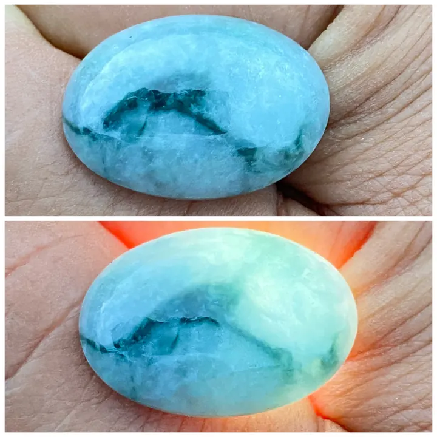

翡翠的「種」：玻璃種、冰種、糯種、豆種
翡翠的「種」像茶的等級——玻璃種是極品、豆種是入門，看懂種，就懂了翡翠的半本字典。

核心定義
「種」是翡翠行話，指翡翠的透明度與內部結構細膩度——它決定翡翠「通透得像玻璃」還是「粗糙得像豆渣」。常見分級由高到低：玻璃種、冰種、糯種、豆種（以及更細的冰糯、糯化等）。
種的本質是晶體顆粒大小與結合緊密程度：晶體細小、排列緊密→光線穿透佳→種老（種好）；晶體粗大、排列鬆散→光線散射→種嫩（種差）。「老種」「新種」的說法，講的就是這個結構差異。
特徵與分類
| 種 | 透明度 | 視覺 |
|---|---|---|
| 玻璃種 | 全透明 | 像玻璃、起瑩光 |
| 冰種 | 半透明 | 像冰、通透 |
| 糯種 | 微透明 | 像糯米湯、溫潤 |
| 豆種 | 不透明 | 粒狀粗糙、像豆渣 |
玻璃種是翡翠的頂級種：全透明、內部乾淨、光線穿過時帶「瑩光」（內部反光）——一塊玻璃種小掛件即可價值不菲。冰種次之，通透如冰；糯種溫潤如粥，是市場主流；豆種粗實，是入門與大眾飾品。
科學原理
種的科學是「微結構」：翡翠由硬玉晶體組成，晶粒越細（可細至顯微級）、排列越均勻，透明度越高。玻璃種的晶粒細密到肉眼難辨、光線全通；豆種晶粒粗大、光線散射成霧。
「起瑩」（fluoresce-like glow）是玻璃種的特殊光學：光線在細密晶粒間多重反射，邊緣出現瑩光帶——這是種老（結構細密）的視覺證據，也是玻璃種身價的來源。
鑑定與鑑別方法
- 透光觀察：種越老越通透
- 看顆粒感：豆種肉眼可見粒狀
- 找「瑩光」：玻璃種起瑩
- 上手掂量：翡翠比重大、壓手
- 對照證書：種是商業描述，證書標明翡翠（jadeite）
市場行情與保養建議
行情上，種是翡翠價格的第一階梯：同樣大小，玻璃種與豆種價格可差百倍以上。玻璃種、冰種是收藏主流；糯種性價比高；豆種大宗平價。近年「種水」在市場的地位甚至高於「色」。
選購建議：種與色要平衡——「種水好但無色」與「色濃但種嫩」各有行情；預算有限時，糯種帶翠是性價比甜蜜點。
常見誤區
現代市場「種水優先」：同樣綠色，玻璃種與豆種價格天差地遠。「色」是加分，「種」是基礎——種差，色再好也撐不起價格。
透是種的一環，但「起瑩」「起膠」的玻璃種（晶粒細密）才是頂級；單純的透（如冰種）次之。種的評價是結構細密度，不是單一透明度。
冷知識
玻璃、冰、糯、豆——行家拿日常事物形容翡翠的質感，這是民間智慧的結晶，也是華人寶石學的獨特語言。
種老（結構細密）與開採年代無關——「老種」指的是地質結晶條件好，不是「採得早」。術語的「老」，是品質形容詞。
反直覺觀點
它通透得像玻璃，初看者常懷疑是假貨——玻璃種的美，需要懂行的人才能讀懂它的「瑩光」價值。
玻璃種無色翡翠（白底青的極端）市場價格依然驚人——當種水夠好，顏色反而成了配角。結構之美，是翡翠的另一條價值軸。